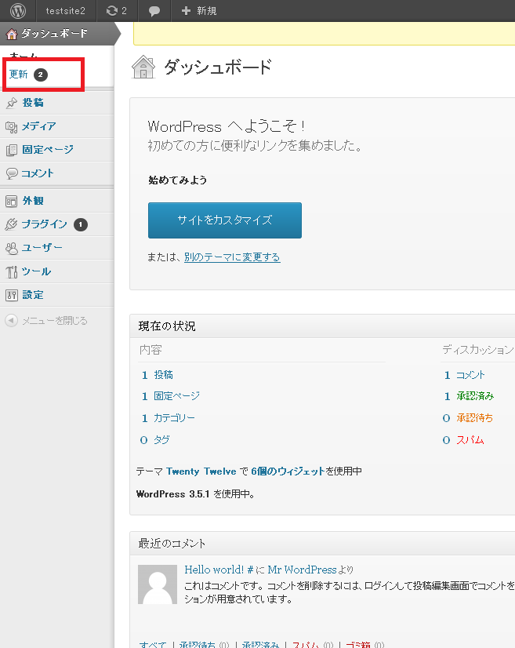
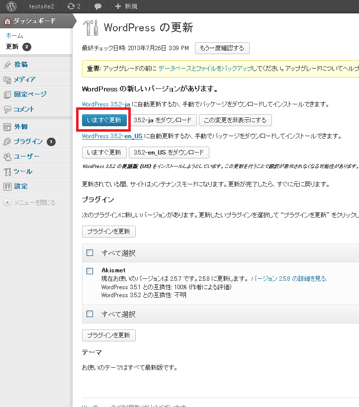
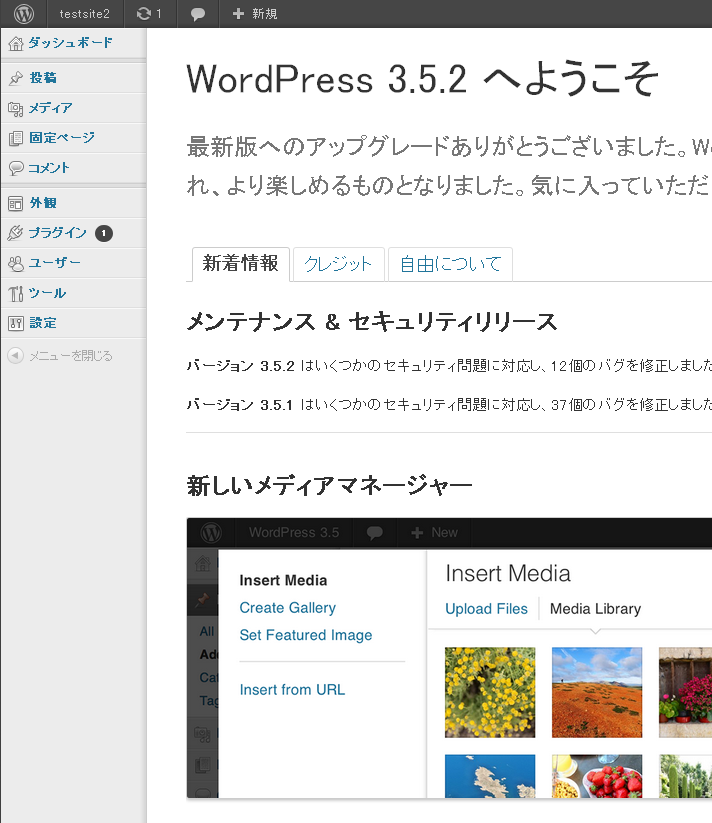

簡単インストール機能のWordPressは、現在、3.5.1を自動でインストールさせていただいております。
もっと新しいWordPressを利用したい場合は、簡単インストールの実行後、以下の手順で、更新を行うことができます。
WordPressの管理画面にログインされますと、WordPressの管理画面の左上メニューに「更新」リンクがありますので、クリックしてください。
【ログイン先の例】http://ご契約ドメイン名/インストール先フォルダ/wp-admin/

「いますぐ更新」ボタンを押されますと、インストールが始まります。

しばらくお待ちいただけますと、更新終了のメッセージが表示され、最新版のWordPressを導入することができます。
